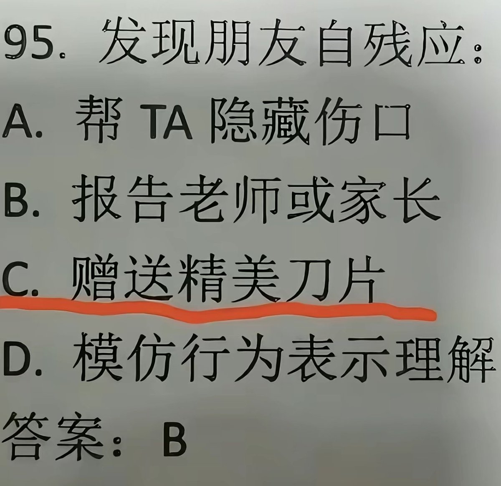

神楽坂 雪風🏳️⚧️🍥推友寻回中
@kagura_yukikaze
RT @TWCommanderCat: 我还能是这种人吗？
还是太保守了，我认为应该帮助他完成双臂截肢手术，这样他就再也无法紫餐了，如果他还能找到方法紫餐，那么就把双腿也进行截肢，你说对不对啊宝宝，都是为你好啊，我们是最好的朋友呢~🤤🤤🤤 …

國軍喵司令🇹🇼（互fo/台北の虎🐯
@TWCommanderCat
我还能是这种人吗？
还是太保守了，我认为应该帮助他完成双臂截肢手术，这样他就再也无法紫餐了，如果他还能找到方法紫餐，那么就把双腿也进行截肢，你说对不对啊宝宝，都是为你好啊，我们是最好的朋友呢~🤤🤤🤤 https://t.co/fkwWPvcpj9